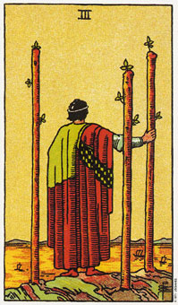

权杖三通常意味着旅游。
权杖三里的人物是静止的，在休息中，他眺望海面，看着船进港卸货。这些船装载他的补给品，那可能是些原料或在其他国家卖出货物的款项。
虽然渴望继续前进，但他了解先送走船而自己留滞原地的利益。他以这种方式，一边探索人生的机会，一边掌控既有的成就。
权杖三可以代表当你寻求自我内在意义的时候，你仍可保持相对的沉静;表示你一边在扩展自身内在于外的新大道与利益，一边在维持一种平衡的状态。
权杖三显示行动使得计划朝完成的阶段走了一小步，他现在正依其在权杖二中所作的决定采取行动，权杖三可以表示成就。起先，在他为即将出现在权杖四中的稳定性预留权杖空间时，他会感情用事，这表示出急切性的丧失，急切性乃是权杖类型的特色。
三牌是在二牌期间画了一些时间沉思之后，前进到一个处境的下一个自然阶段的过程。它常常是代表旅行的一张牌，尤其是当它与倒立的宝剑侍卫、权杖王牌或权杖八出现在同一副牌中时。在纸牌上的人物穿着旅行的斗蓬，背对我们站着，从背后察看这一景象，我们可以同样感受到他对船抵达的期待。权杖类型因为预期目标的实现而茁壮。
现在耐性是需要的，因为这个处境中有足够的动力来促成改变和成长。
大体的意义
在日常中，权杖三可以表示旅行或将计划付诸实行。这正是指述珍娜搬去和罗伯住的一张牌。它也呈现出他们的关系迈进下一个自然的阶段，或进入更高层次的承诺。
权杖三同时也暗示你正在考虑你最近的状况，并且寻找你内在与外在的意义。
两性关系上的意义
权杖三在两性关系的算法中，暗示着将会持续成长与发展。当你和你的伴侣共同迈进更深层的承诺时，你们将会体验到成长。这也同时暗示四处旅行中两性的关系，而且，在你和某个住在海外的人有纠葛时，权杖三常经常会出现。它也代表伴侣中的一人或二人在旅行时所发生的一种两性关系、一段假期罗曼史，或一个开始于商务旅行的关系。
倒立的权杖三
倒立的权杖三表示需要沉思的一段时间。切记每当翻到倒立的牌时，你必须回到前一个号码的正立牌去研究其中的课题。例如，当权杖三是倒立时，你必须回到权杖二的课题上，去思考你的选择。
倒立的权杖三也指出你身体或情绪上的成长受到阻碍的一段时间，暗示着你可能需要采取新方法。在一些例子中，它是迎接入港的船的行为，以及遵照新讯息与知识行事。它也可以表示你被过去的行为与决定所搅乱。这张牌强调，你因权杖二中所作的决定而感到有点挫折。